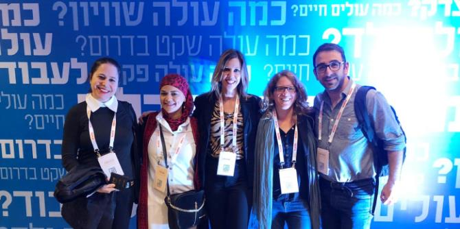

The Israel Business Conference, which has been held annually for two decades, is known as the most important and prestigious economic and social event in Israel. The Conference brings together representatives of the public sector, non-profit organizations, and the business sector, researchers in the fields of economy and society, leading media figures, and speakers and delegations from Israel and around the world for direct interaction with each other.
The Conference explored a range of fields relevant to business and economic development. It offered Mandel fellows a unique opportunity to get involved and see how things operate on the ground, to connect with potential stakeholders, and to gain experience in creating opportunities, advancing enterprises in fields that are relevant to them, and recruiting partners.
The fellows attended lectures and panel discussions on social issues and on promoting initiatives that connect Israel’s periphery with its center. In between the sessions and activities, the fellows met with the CEO of Bank Hapoalim,
Arik Pinto, for a discussion. Mr. Pinto agreed to visit the Mandel Program for Social Leadership at the Mandel Center for Leadership in the North, in order to learn and discuss issues of interest to the fellows.

{kind=link}